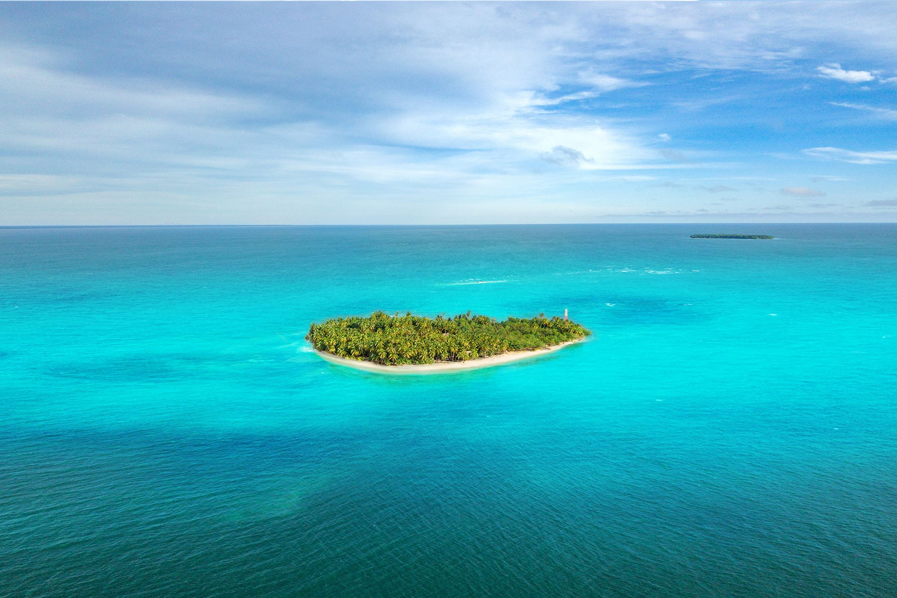

Nouvelle 01 — Un Océan d’Amour
« Il était une fois, sur une île lointaine, l’Amour vivant avec l’Océan. »
Imaginez être plongé dans la même vie merveilleuse, tous les jours, quand soudain, ce que vous chérissez le plus semble vous quitter.

Cette nouvelle de sept pages fut écrite entre mai et juin 2019. C’est une durée d’écriture assez longue, aussi j’espère que vous apprécierez le résultat. Pour essayer, et parce que je voulais faire lire cette histoire à un anglophone en premier, je l’ai écrite en anglais et traduite en français ensuite, c’est-à-dire que la traduction s’est faite dans l’autre sens que pour ma première nouvelle, Space Punk. Je crois que dans cette direction ça a été un peu plus facile, mais ce n’est peut-être que parce que je pensais à moitié dans ma langue maternelle, le français, alors que j’écrivais en anglais.
Pour éviter de dévoiler le contenu de cette courte histoire, je ne peux ici mentionner ni l’intrigue ni les personnages. Je vais simplement dire que j’ai tenté de rendre cette histoire merveilleuse, et qu’elle parle de l’Amour.
Le seul problème éventuel, cela dit, pourrait être que dans cela, je n’ai pas souhaiter faire passer un message, ni à donner un sens profond. Je voulais simplement écrire quelque chose qui soit beau d’une manière romantique et magique.
Maintenant que ceci est écrit, qu’est-ce qui nous attend ? Il reste à paraître un nouvel article de Johyn à propos de son projet NOISE (lisez le premier article ici, on espère que le suivant sera traduit en anglais è_é). Quant à moi, je vais à dorénavant tenter d’écrire quelques scènes-tests et un plan pour un roman ! Ce projet traîne dans le dossier de mon ordinateur, et dans mon carnet, depuis maintenant plusieurs mois. Ce serait le récit de la famille Mustaphe, habitant en France, en 2019. Pour rendre la chose plus intéressante, il sera question de romance, de rêve à poursuivre, et de photographies de ruines, prises illégalement. En ce moment la première des possibles scènes est en cours de griffonnage, et j’ai hâte de l’avoir terminée pour pouvoir récolter quelques opinions à son propos.
Merci de vous être arrêté sur Laitues, bonne lecture, et n’hésitez pas à m’envoyer un mail en cliquant mon nom dans la barre latérale ou ci-dessous, si vous le désirez.
Quentin RibacP.S. : la V.O. est sur la version anglaise de cet article !